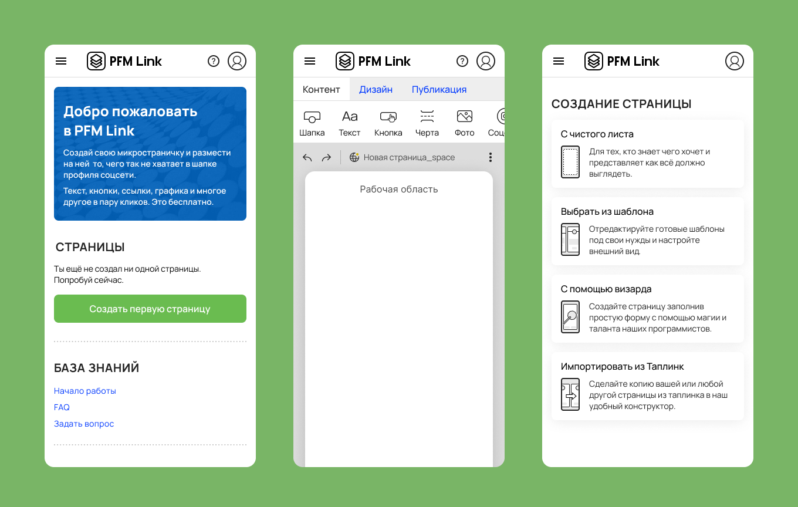
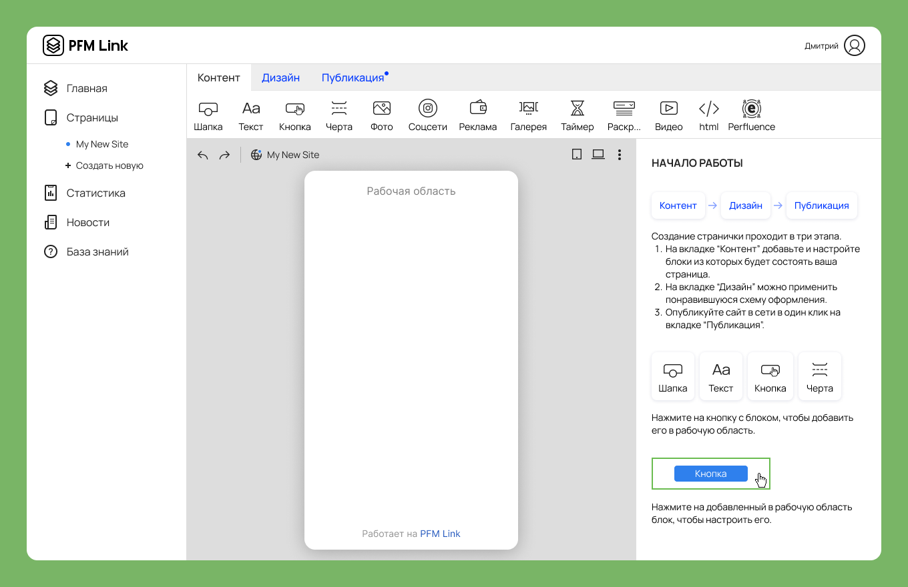
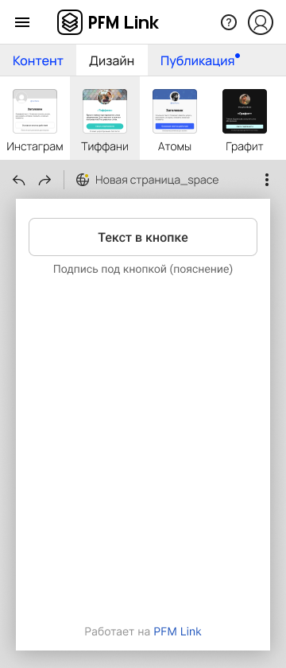
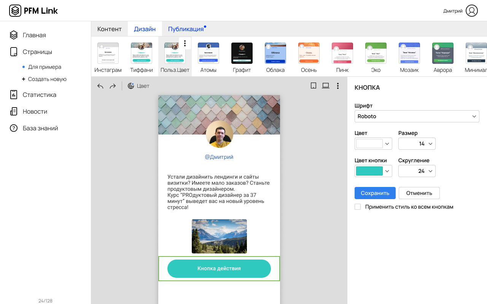

Когда задача на пол года работы описывается одним предложением - это очень волнительно. Когда понимаешь, что для решения задачи потребуется в два раз больше времени становится страшно. Спустя семь месяцев, наблюдая готовый результат, радуешься как ребенок сообщениям на почту с фидбеком и предложениями об улучшении продукта от пользователей.
Работая над Линком я научился ставить задачи, договариваться с коллегами, презентовать решения.
Проект растет и улучшается. Очень горжусь этим продуктом.

Создать конкурента популярного у блогеров конструктора персональных микролендингов Таплинк.
Шесть месяцев до готового продукта.
Команда из трёх человек.
Роль - дизайнер продукта.

Здорово придумывать всё самому, но нужно внимательно смотреть и анализировать решения конкурентов. Собрал скриншоты ключевых механик продуктов конкурентов. Построил чужой юзер флоу) Это помогает понять, что конкуренты считают важным для себя и своих пользователей. Проанализировал эти решения и отметил удачные для себя.
В сжатые сроки очень полезно смотреть скриншоты с разработчиками. Мы на этом этапе отмели много сложных и не важных функций, а я сэкономил время на прототипировании.
Разработал прототип продукта. Много работал с UX на этом этапе. С разработчиками более точно посчитали сроки на разработку. Согласовал макеты с бизнесом.
Мне повезло. Я получил добро на реализацию своего видения продукта. Заказчик не стал выбирать дизайн, а доверился моему вкусу. Я выбрал минимализм, потому что в конструкторе сайтов ничего не должно отвлекать пользователя от дизайна его страницы. На всякий случай отправил на согласование страничку с референсами, которые отбирал для себя. Получил второй ОК.


При опросе ЦА я понял, что главная ценность продукта - простота. Процесс создания сайта не должен быть сложнее создания сторис из Инстаграм. У меня появилась концепция: "Всё просто как раз, два, три". В команде три человека, создание сайта проходит в три этапа (Контент, Дизайн, Публикация). При создании страницы в конструкторе пользователь чаще встречается с выбором из трех элементов (объект может быть маленьким, средним, большим). Страницу можно создать тремя способами. В логотипе обыграна как раз эта история с тремя сущностями.
Куда без них. Продукт создан. Тестируем, собираем обратную связь. Внезапно бОльшая часть пользователей недовольна невозможностью редактировать дизайн. Я предусматривал выбор из мною созданных тем оформления. Это казалось крутой особенностью создания сайта, ведь темы делал профессионал дизайнер. Это существенно проще и быстрее для ЦА. Однако...
Добавляем месяц разработки и внедряем новый функционал.
За пол года работы конструктора 7000 пользователей опубликовали около 5000 страниц, которые посетили более 120000 раз. Работая над Линком я научился ставить задачи, договариваться с коллегами, презентовать решения. Проект растет и улучшается. Очень горжусь этим продуктом.